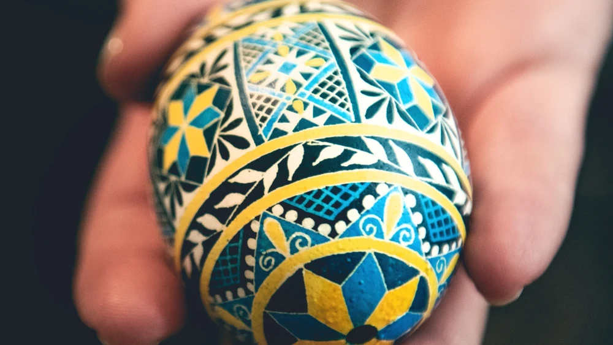

Pysanka Eggs in Ukraine
Pysanka eggs are intricately decorated Ukrainian Easter eggs made using a wax-resist method. The designs are created by drawing on the egg using melted beeswax, which is then covered in dye. After the dye has dried, the wax is removed to reveal a colorful design!